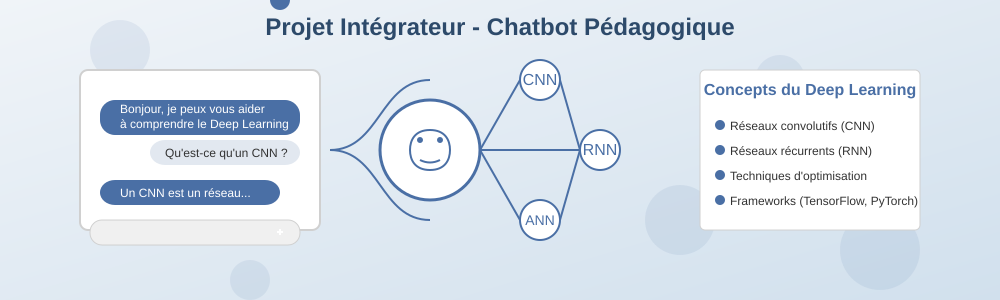

Séance 4 : Projet intégrateur - Chatbot pédagogique

Objectifs de la séance
Cette dernière séance vous permettra de :
- Appliquer l'ensemble des connaissances acquises dans un projet concret et complet
- Développer un chatbot pédagogique fonctionnel expliquant le Deep Learning
- Intégrer l'API Mistral AI dans une solution complète
- Présenter et défendre votre solution technique
Approche pédagogique
Cette séance est entièrement basée sur la réalisation d'un projet concret en équipe. Vous devrez mobiliser toutes les compétences développées lors des séances précédentes pour créer une application complète et fonctionnelle. L'accent est mis sur l'autonomie, la collaboration et la mise en pratique professionnelle.
Structure de la séance (4h)
gantt
dateFormat HH:mm
axisFormat %H:%M
section Planning
Développement du chatbot :milestone, 00:00, 2h30m
Finalisation et tests :milestone, 02:30, 1h
Présentation des projets :milestone, 03:30, 30mTrois phases de réalisation
Phase 1 : Développement du chatbot (2h30)
Implémentez les fonctionnalités principales de votre chatbot pédagogique :
- Mise en place de l'interface conversationnelle
- Intégration avancée avec l'API Mistral AI
- Structuration et enrichissement de la base de connaissances
- Développement des fonctionnalités d'aide à l'apprentissage
Phase 2 : Finalisation et tests (1h)
Peaufinez votre solution et assurez-vous de sa qualité :
- Tests fonctionnels et scénarios d'utilisation
- Optimisation des performances
- Documentation technique et guide utilisateur
- Préparation de la démonstration
Phase 3 : Présentation des projets (30min)
Présentez votre solution à la classe :
- Démonstration en direct du chatbot
- Explication des choix techniques
- Retour sur les défis rencontrés et les solutions adoptées
- Questions-réponses
Ressources nécessaires
Pour cette séance, vous aurez besoin de :
- Votre document de conception préparé lors de la séance 3
- Compte et clé API Mistral AI
- Environnement de développement (Google Colab ou local)
- Templates fournis pour la documentation
Livrables attendus
À l'issue de cette séance, vous devrez remettre :
- Code source complet du chatbot pédagogique
- Base de connaissances structurée sur le Deep Learning
- Documentation technique expliquant l'architecture et les choix d'implémentation
- Guide utilisateur pour la prise en main
- Présentation avec support à fournir
Ces livrables constituent l'aboutissement de votre parcours et seront évalués selon les critères détaillés dans la grille d'évaluation.
Prêt à relever le défi ?
C'est l'heure de mettre en pratique tout ce que vous avez appris pour créer un outil réellement utile. Bonne chance !